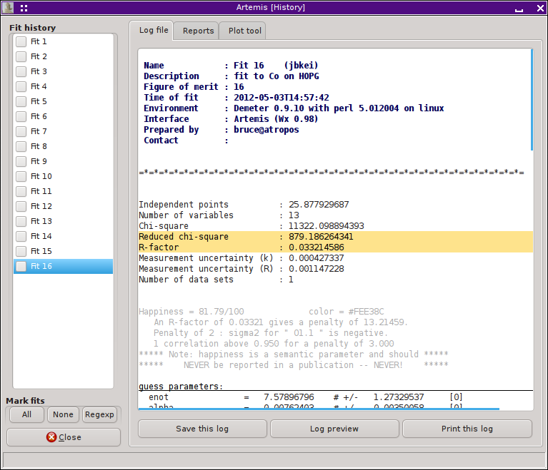

Home
Introduction
Starting Artemis
The Data window
The Atoms/Feff window
The Path page
The GDS window
Running a fit
The Plot window
The Log & Journal windows
The History window
Monitoring things
Managing preferences
ARTEMIS keeps a complete history of your fitting project. After each fit, your fitting model and the state of the program are saved as part of the fitting project. When a project file is written, this history is stored in the project file. This allows you to compare fits or even to revert ARTEMIS to an earlier fit.
Interactions with the fit history are via the History window, which is shown and hidden using the History button on the left side of the Main window.
|
Tie History window shows two major controls. On the left is a list all fits performed as part of the fitting prject. Like many other lists in ARTEMIS, this contains elements that can be selected and marked. This list uses multiple selection, so control-clicking can be used to add to the selection and shift-clicking can be used to select groups of fits. Much of the analysis discussed below uses the selection. Some functionality uses the set of marked fits. On the right is a notebook. The first tab is for displaying the log files from old fits. The log file displayed when the most recent fit is clicked upon is identical to the log file displayed in the Log window. You may find that there is a short pause between clicking on a fit and seeing its log file displayed. When importing a project file, ARTEMIS delays importing the fits until one is explicitly needed. For a large project file, this greatly speeds up import at the small cost of a pause when examining log files. |
 |
|
Each fit in the list will display a context menu when right clicked. Again, there may be a short pause before the menu gets posted. In that menu are a variety of functions related to the fit history.
|

|
The second tab is used to analyze groups of fits. In the example shown above, the progression of χ²ν values throughout the development of the fitting model is shown both as a textual report and as a plot. Similar plots can be made for individual parameter values.
Only the marked fits are included in the report. If no fits are marked, then all fits will be marked before the report is generated. Simple controls for setting the marks are at the bottom of the list. The buttons marked “All” and “None” set and clear all marks. The “Regexp” button will prompt you for a pattern to match against all fit names.
When a fit is selected from the list, the “Select parameter” menu is populated with the names of the parameters used in that fit. All parameter types are included. Selecting a new item from the menu or clicking the “Write report” button will generate a new report and its plot.
For statistics, all of χ² , χ²ν , R-factor, and the happiness are reported. You can choose which of χ²ν , R-factor, and happiness to have displayed in the resulting plot. Clicking the “Show y=0” button forces the plot to be scaled of the y-axis such that y=0 is shown.
Buttons at the bottom of this tab allow you to save the report as a text file or to send it to the printer.
The plot tool tab is used to place old fits in the Plotting list for comparison with data and with the current fit.
On the to do list: The history plotting tool is not currently working.